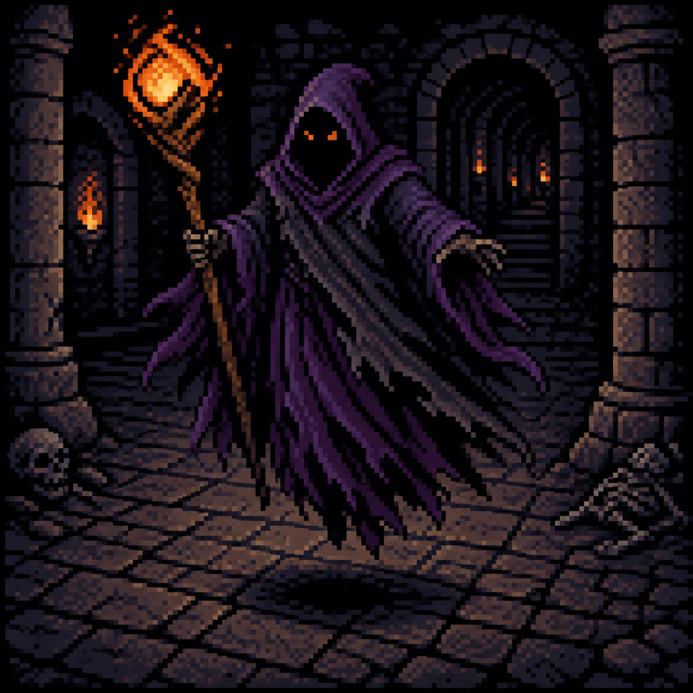
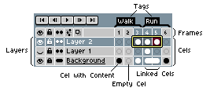

Karaktert a háttérből
kivágás & rétegek
A feladat: a Sprite-0002.png jelenetből emeljük ki a csuklyás karaktert — a háttér legyen átlátszó, a test (body) és a bot (staff) pedig kerüljön külön rétegre. Animáció nélkül. Végigvisszük a teljes munkafolyamatot, és minden lépéshez van interaktív demó a valódi képen.
Eredeti → kivágott karakter (átlátszó háttér) → body + staff külön rétegen.
A feladat & a terv
Adott egy kész kép, a Sprite-0002.png: egy lila csuklyás alak, kezében világító bottal, egy sötét tömlöc-jelenet előtt. A dolgunk, hogy ebből használható játék-karaktert csináljunk:

- Háttér → átlátszó: a tömlöc tűnjön el, maradjon a puszta karakter.
- Body és staff külön rétegen: a test az egyik, a bot a másik rétegre kerüljön.
- Animáció nélkül: most csak a statikus, rétegelt sprite a cél — de épp ez teszi később könnyen animálhatóvá.
Miért éri meg külön rétegre tenni a botot? Mert így külön kezelhető: később önállóan animálhatod (a fény lobogjon), kicserélheted, vagy a karakter mögé/elé rendezheted. Egyetlen lapított képen ezt nem tudnád megtenni.
1. Megnyitás File ▸ Open — a kép a vászonra 2. Réteggé alakítás ha Background: Convert to Layer (átlátszóság kell) 3. Háttér kijelölése Lasso a karakter körül (összetett háttér → kézi) 4. Háttér törlése Select ▸ Invert → Delete → átlátszó 5. Staff kivágása Cut → új réteg → Paste in Place 6. Mentés .aseprite (rétegek!) + PNG export
Megnyitás & a Background-csapda
Húzd be a képet az Aseprite-ba (File ▸ Open… vagy drag & drop). Mielőtt bármit törölnél, egy fontos buktató: a Background réteg nem lehet átlátszó.
| Eset | Hogyan jön be | Teendő |
|---|---|---|
| Van alfája (mint ennek a PNG-nek) | Átlátszó Layer-ként — törölhetsz rajta. | Semmi extra. ✓ |
| Nincs alfája (pl. tömör JPG) | Background rétegként — a törölt rész a háttérszínnel telik, nem lesz átlátszó. | Layer ▸ Background ▸ Convert to Layer (vagy duplakatt a rétegzárra). |
Background (dőlt, lakattal), előbb alakítsd Layer-ré. Ha sima Layer 1, már átlátszó-képes. A mi képünknek van alfája, de a háttér pixelei tömörek — vagyis a réteg jó, csak a háttér-pixeleket kell kijelölni és törölni.
Kijelölő eszközök — melyik mikor?
A háttér eltávolítása mindig ugyanaz: kijelölöd a felesleget (vagy a karaktert), majd törölsz. A kérdés csak az, mivel jelölsz ki:
| Eszköz | Billentyű | Mire jó |
|---|---|---|
| Magic Wand (varázspálca) | W | Egy kattintással kijelöli az összefüggő, hasonló színű területet. Tökéletes egyszínű háttérhez. |
| Lasso | Q | Szabadkézi körberajzolás. A fő eszköz összetett háttérhez — mint a miénk. |
| Rectangle / Ellipse | M | Mértani kijelölés. Plusz: Shift = hozzáad, Alt = kivon. |
Kattints a háttér egy pontjára — a varázspálca kijelöli (és törli) az összefüggő, hasonló színű foltot. Állítsd a toleranciát, és figyeld, meddig terjed.
0 kattintás · 0% törölve
Kis tolerancia → apró foltokat fog, sok kattintás kell. Nagy tolerancia → átcsordul a karakterbe is. Egy összetett háttérnél ez fárasztó — innen jön a Lasso.
A karakter kivágása (Lasso)
Az összetett háttérhez a megbízható út: rajzold körbe a karaktert Lasso-val, fordítsd meg a kijelölést, és töröld a hátteret.
- Fogd a Lasso-t (Q), és rajzold körbe a karaktert (test + bot). Nem kell pixel-pontosnak lenni — zoomolj rá (+) a precíz részekhez.
- Fordítsd meg a kijelölést: Select ▸ Inverse (Ctrl/⌘+Shift+I) — most a háttér van kijelölve.
- Töröld: Delete. A háttér eltűnik, marad az átlátszó (kockás) terület.
- Tisztítsd a pereme(ke)t: zoomolj rá, és a Eraser-rel (E) vedd le a maradék háttér-pixeleket a karakter körül.
Kattintgass a karakter köré pontokat (poligon-Lasso). Ha körbeértél, nyomd az Invert + Delete gombot — a kijelölésen kívüli háttér eltűnik.
0 pont lerakva
Egy „elég jó" körberajzolás 8–15 pont. Az igazi Aseprite-ban a Lasso szabadkézi (húzod), itt a könnyebb kezelhetőségért kattintós (poligon) — a logika ugyanaz: amit körbezársz, az marad.
Body & staff szétválasztása
Most a karakter egyetlen rétegen van, átlátszó háttéren. A botot (staff) átköltöztetjük egy saját rétegre, hogy később külön kezelhessük.
- Jelöld ki a botot (a rúd + a tetején a fény) Lasso-val.
- Edit ▸ Cut (Ctrl/⌘+X) — a bot eltűnik a karakter-rétegről (a vágólapra kerül).
- Hozz létre egy új réteget: Layer ▸ New ▸ New Layer (vagy a Timeline + gombja).
- Illeszd vissza helyben: Edit ▸ Paste in Place — a bot pontosan az eredeti helyére kerül, de már az új rétegen.
- Nevezd át a rétegeket (duplakatt a réteg nevére):
bodyésstaff.
A Timeline-on felül lévő réteg takarja az alatta lévőt. Mivel a bot a karakter előtt (a kezében) van, a staff rétegnek a body fölött kell lennie. Húzással átrendezheted őket. A szem-ikonnal ki-be kapcsolod a láthatóságot — próbáld a demóban!

staff a body fölé. (A Frames/Tags most nem érdekes — nincs animáció.)A kész karakter két rétege. Kapcsold a láthatóságot a szem-ikonnal, és told el a botot, hogy lásd: tényleg külön van.
Kapcsold ki a body-t → csak a bot marad. Told el a botot → kilóg a testből: ez bizonyítja, hogy külön rétegen van. (A szétválasztás itt közelítő; az igazi munkát Lasso-val pixel-pontosan végzed.)
Mentés & export
Két különböző cél, két különböző fájl — és a sorrend fontos:
File ▸ Save As… → karakter.aseprite megőrzi a body + staff réteget, átlátszóságot File ▸ Export ▸ PNG → karakter.png lapított, átlátszó hátterű kép (a játékba)
.aseprite-ot! Ha a két réteget a játékban is külön akarod (pl. külön mozgó bot), exportáld őket külön-külön PNG-be: kapcsold láthatóra csak az egyik réteget, exportálj, majd a másikat.
A külön body.png és staff.png a játékmotorban két külön sprite lesz, közös szülő-entitás alatt — így a botot önállóan forgathatod/animálhatod. Lásd a Bevy sprite és pixel-skeleton leckét.
Összefoglaló & merre tovább?
Végigvitted a feladatot — a kész karakter átlátszó hátterű, kétrétegű, és készen áll a játékra:
- Megnyitás + (ha kell) Convert to Layer.
- Háttér el: Lasso a karakter köré → Invert → Delete → perem-tisztítás.
- Staff külön rétegre: kijelöl → Cut → új réteg → Paste in Place → átnevezés (
body/staff). - Réteg-sorrend:
staffabodyfölött. - Mentés:
.aseprite(rétegekkel) + PNG export.
- Animáció — keltsd életre: a bot fénye lobogjon, a köpeny lebegjen (külön rétegen külön animálva). Lásd az Aseprite alapok animációs fejezetét.
- Rajztechnikák — retusáld a kivágás peremeit, adj kézi anti-aliasingot: rajztechnikák lecke.
- Több réteg — bontsd tovább (fej, köpeny, kéz) ugyanezzel a Cut → új réteg → Paste módszerrel.